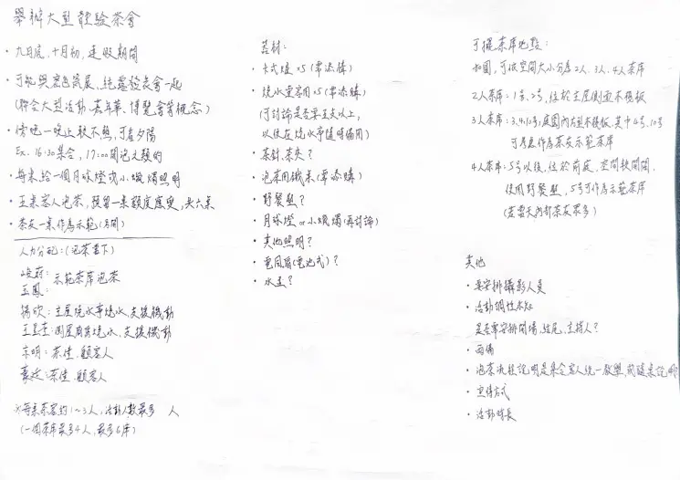
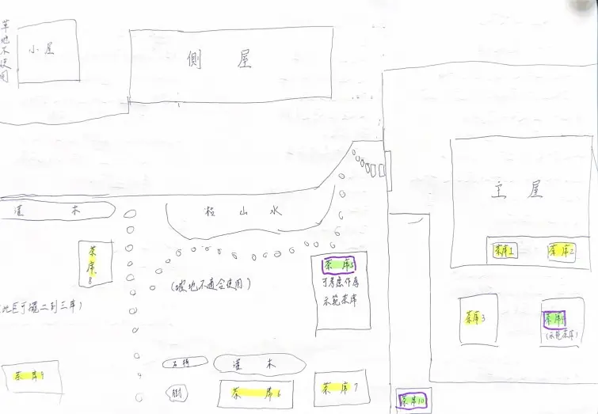
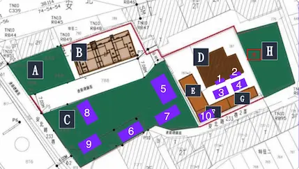
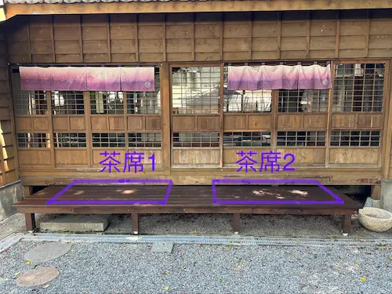
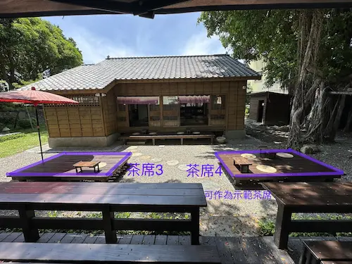
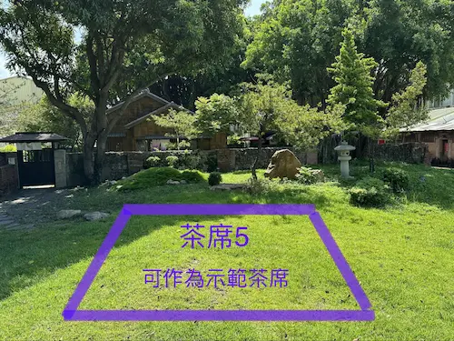
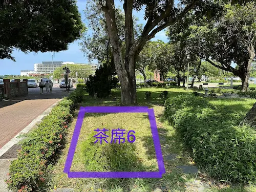
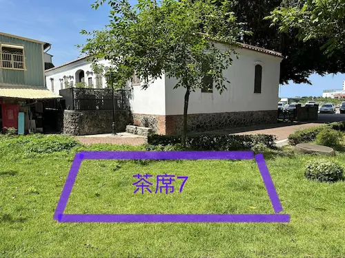
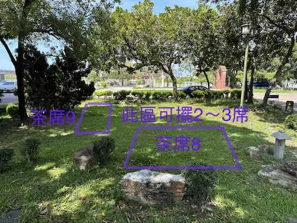
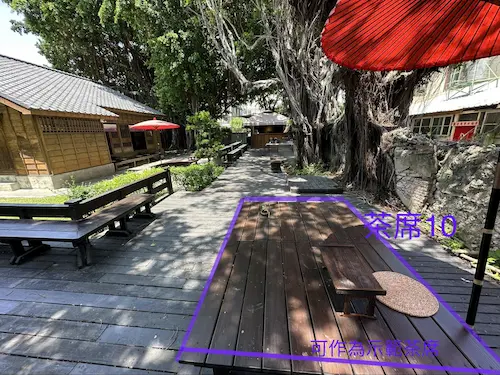

未竟之夢，抑是空中樓閣？ ──體驗茶會活動企劃

此系列紀錄我那些規劃完成，但沒能實行的企劃，安放在此，讓他們告一個段落。
這是我寫的第一份企劃，也是未竟之夢系列篇章的起點。
《若晞茶空間》在2023年二月開幕後，生意一直不見起色，於是創辦人說我們要善用園區佔地遼闊的優勢，要舉辦活動！
講了一陣子後，我腦中逐漸浮現出活動的樣貌，於是便提筆寫下我的想法。


因為從沒舉辦過活動，也沒寫過企劃書，只是隨筆記下我認為的活動樣貌，並憑著大學時參與營隊籌備的記憶，列出人員工作分配與器材清單，然後畫出每天都在打理、再熟悉不過的園區地圖，安排活動場地佈置。
寫完之後，我拿給大家看。年代久遠，我現在已經想不起來大家怎麼說了。不過合理推測，大概沒有得到什麼建設性的回饋吧😂
當時有一位同樣也在喝茶的厲害朋友（並非若晞員工）看了之後，跟我說我寫的內容已經具備企劃書的架構了，他提出一些關於撰寫企劃書的建議之後，我便將內容整理好打進Word，並增加了他建議的部分。
以下為最終的企劃書全文：
##體驗茶會活動企劃
- 活動內容
- 讓客人自己體驗泡茶
- 體驗茶席五席，預留一席
- 茶友示範茶席一席
- 可考慮與以下活動聯合舉辦：
- 秘色瓷展
- 純露發表會
- 品茶會
- 讓客人自己體驗泡茶
- 時間
- 九月底十月初，連假期間
- 傍晚～晚上，氣溫較不熱、有夕陽時，如：16：30集合，17：00開始泡茶
- 器材
- 卡式爐*5
- 客用燒水壺*5（須準備大燒水壺隨時燒滾水，或討論其他方案
- 茶針、茶夾
- 水盂
- 野餐墊，戶外茶席參考：https://instagram.com/wild.playground?igshid=NTc4MTIwNjQ2YQ==
- 泡茶用桌
- 月球燈、天然小蠟燭等氣氛照明物
- 場地照明
- 電風扇（電池式）
- 人力分配
- 三公子：示範茶席泡茶
- 老闆娘：示範茶席泡茶
- 店 長：主屋燒水亭燒水、支援機動
- 王昱荃：側屋廚房燒水、支援機動
- 同 事：茶僮、顧客人
- 同 事：茶僮、顧客人
- 茶席佈置地點
- 如圖可依空間大小分為兩人、三人、四人茶席
- 兩人茶席：1號、2號茶席，位於主屋側面木棧板
- 三人茶席：3號、4號、10號茶席，庭園內方型木棧板，其中4號、10號茶席可作為茶友示範茶席
- 四人茶席：5號～10號茶席，位於前庭，空間較開闊，使用野餐墊。若當天參與茶友眾多，或是由希格斯泡茶，5號可作為示範茶席








- 其他
- 要安排攝影人員
- 活動調性未知、是否需安排開場、結尾、主持人？
- 雨天備案
- 泡茶流程說明是集合所有人統一說明或是隨桌教學？
- 宣傳方式（拍影片、發文
- 活動時長
不愧是我厲害的朋友，經過他的指點，增加了標記茶席位置的場勘照，感覺整份企劃書的專業度就提升了不少👍
沒想到，我首次嘗試為若晞寫活動企劃，唯一給我建設性回饋的居然不是若晞的內部人員😅 而且仔細想想，這似乎也是我撰寫的所有企劃，唯一一次有得到建設性回饋😨 或許這時早已為後續一連串悲慘的故事埋下伏筆了🤔
而這份企劃完成之後，歷經了後續種種失敗的企劃、被已讀不回、園區遭遇風災毀滅後，等到了九月底十月初涼爽的季節時，早就被所有人拋到腦後，就連我也忘了他的存在😢
現在回頭看，當初居然寫下了「可與秘色瓷展、純露發表會一起舉辦聯合大型活動，類似博覽會概念」，真的是很有野心耶😮
看看我的未竟之夢都累積幾篇了，我們實際上光是一件事都做不好，還想辦博覽會呢～果然是第一次寫企劃的初生之犢🤣